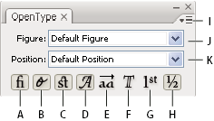

OpenType panel overview
You use the OpenType panel (Window > Type > OpenType) to specify how you want to apply alternate characters in OpenType fonts. For example, you can specify that you want to use standard ligatures in new or existing text.
Keep in mind that OpenType fonts vary greatly in the kinds of features they offer; not all options in the OpenType panel are available in every font. You can view the characters in a font using the Glyphs panel.

- A.
- Standard Ligatures
- B.
- Contextual Alternates
- C.
- Discretionary Ligatures
- D.
- Swash
- E.
- Stylistic Alternates
- F.
- Titling Alternates
- G.
- Ordinals
- H.
- Fractions
- I.
- panel menu
- J.
- Figure type
- K.
- Character position
You can access additional commands and options in the OpenType panel menu in the upper right corner of the panel. For a video on working with the Glyphs panel and the Open Type panel, see www.adobe.com/go/vid0048.